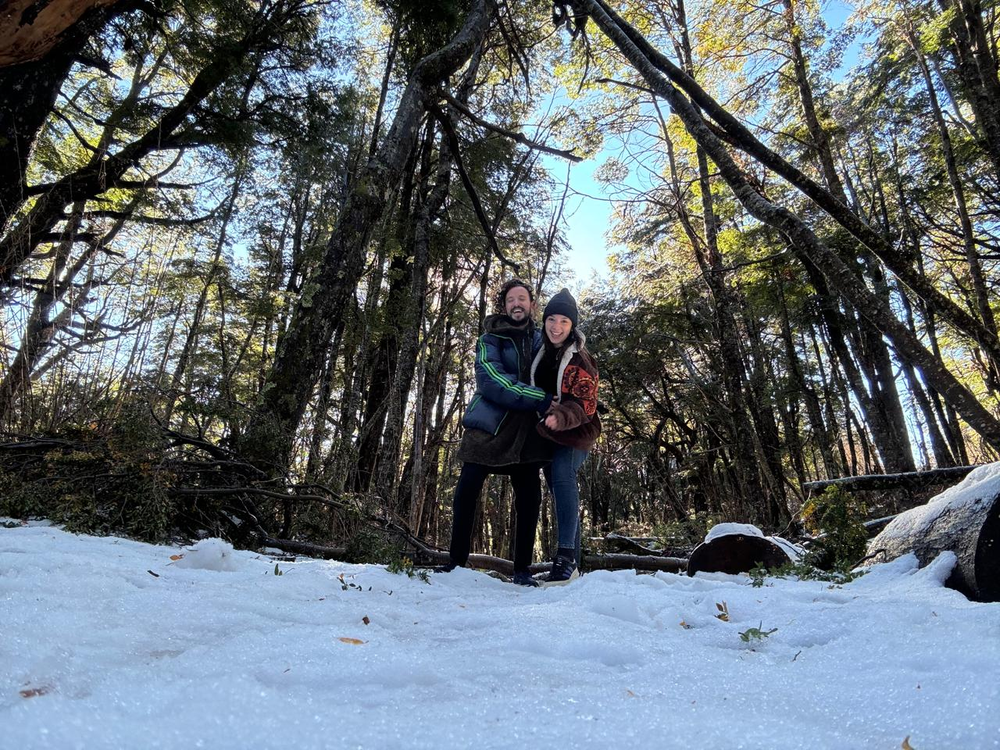

Bariloche y Villa La Angostura en nuestras rutas de viaje
Relato de nuestro viaje al Sur: Bariloche, Villa La Angostura y San Martín de los Andes. Viajar al sur argentino siempre fue uno de nuestros grandes sueños. Apenas llegó el invierno, armamos las valijas y partimos rumbo a la Patagonia. La primera parada fue Bariloche: llegamos con frío, mucho entusiasmo y ganas de montaña. Nos recibió el lago Nahuel Huapi con su azul profundo, rodeado de montañas nevadas y bosques interminables. Los días los pasamos caminando por el Centro Cívico, tomando chocolate caliente y explorando los cerros cercanos. Una de las mejores experiencias fue subir al Cerro Campanario para ver desde arriba las rutas de viaje que conectan lagos y montañas.
Después de unos días increíbles, seguimos viaje hacia Villa La Angostura. El camino entre bosques y lagos fue casi tan lindo como el destino. Villa La Angostura es más tranquilo, con un ritmo relajado y vistas de cuento. Recorrimos el Bosque de Arrayanes, caminamos por la costanera y probamos truchas y cervezas artesanales. Finalmente, visitamos San Martín de los Andes y el Lago Lacar, disfrutando de senderos, picnics y paisajes de montaña. Estas rutas de viaje por el sur argentino nos regalaron paisajes imponentes, aire puro, buena comida y momentos de calma absoluta.